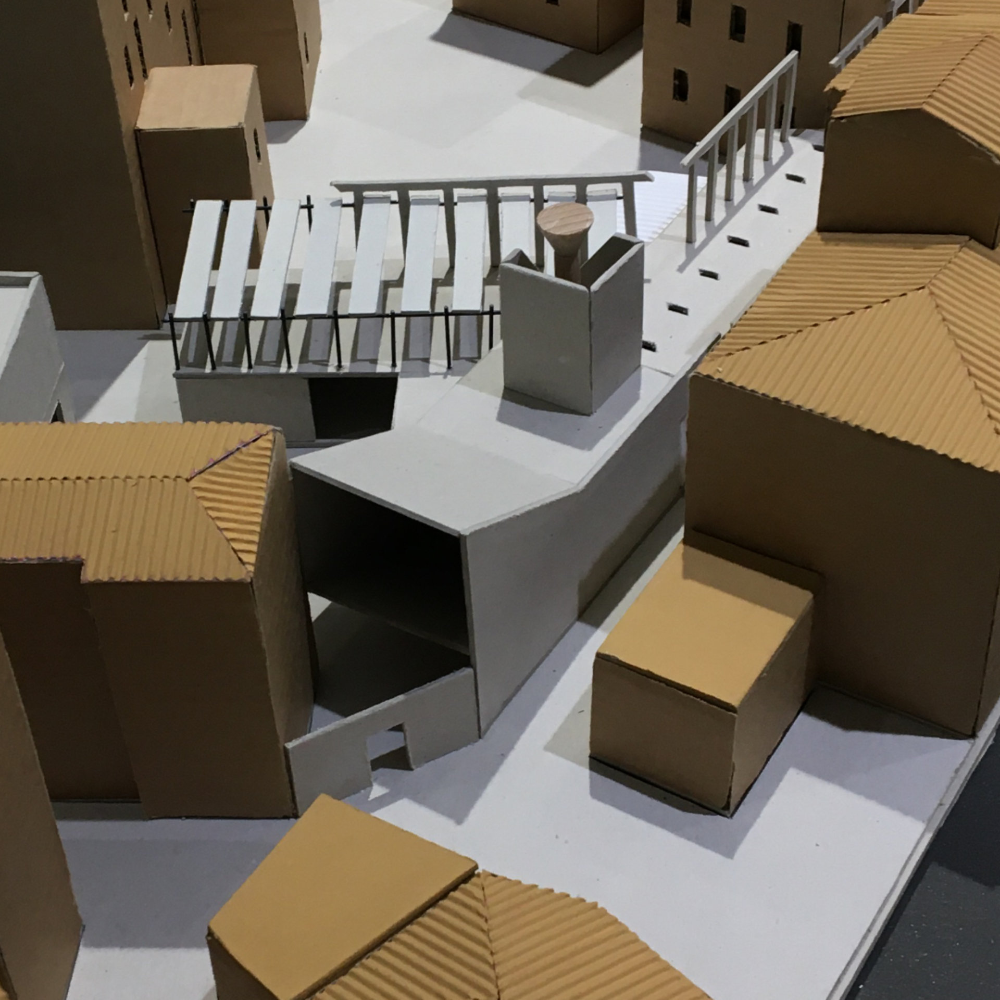
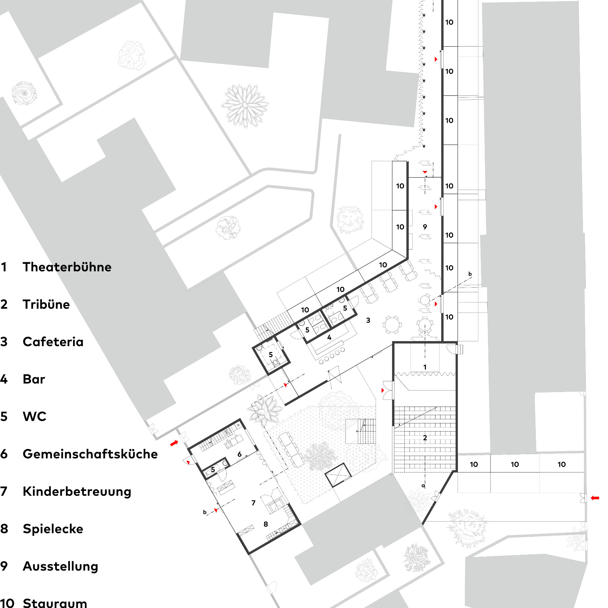

Architektur B.Sc.
2022
Altana Sociale: Entwurf eines Versammlungsraums für die Bewohner:innen von Sant'Elena
⬤ Vor dem Hintergrund der Architektur-Biennale 2021 unter Hashim Sarkis' Motto "How will we live
together?" erforscht diese Bachelorarbeit großzügige Wohnformen, die Verbindung über politische
und soziale Gräben ermöglichen. Trotz Individualisierung sollen Räume gemeinschaftlichen Lebens
menschliche Beziehungen stärken.
Die Arbeit analysiert Wohnmodelle von individuellen Einheiten bis Superblocks. Fokus: räumliche
Strategien für Großzügigkeit – groß dimensionierte Gemeinschaftsräume, differenzierte
Privatheitsgrade, Übergangszonen und multifunktionale Innenhöfe. Fallstudien umfassen
kooperatives Wohnen, Mehrgenerationenprojekte und temporäre Gemeinschaften.
Besondere Berücksichtigung findet die Balance zwischen Individualität und Gemeinschaft: modulare
Grundrisse für personenspezifische Anpassungen, großzügige Verbindungen für soziale Interaktion.
Entwurfsvorschläge zeigen hybride Wohnformen, die urbane Dichte mit großzügiger Raumerfahrung
vereinen.
Architektur wird als verbindendes Medium positioniert, das trotz politischer Polarisierung Räume
schafft, in denen das gemeinsame Menschsein erlebbar wird – als Antwort auf Sarkis' Aufruf
großzügig zusammenzuleben.
⬤ Against the backdrop of the 2021 Architecture Biennale under Hashim Sarkis' motto “How will we
live together?”, this bachelor thesis explores generous forms of living that enable connection
across political and social divides. Despite individualization, spaces for communal living
should strengthen human relationships.
The thesis analyzes housing models ranging from
individual units to superblocks. Focus: spatial strategies for generosity—large communal spaces,
differentiated degrees of privacy, transition zones, and multifunctional courtyards. Case
studies include cooperative living, multigenerational projects, and temporary communities.
Special attention is given to the balance between individuality and community: modular floor
plans for person-specific adaptations, generous connections for social interaction. Design
proposals show hybrid forms of living that combine urban density with a generous spatial
experience.
Architecture is positioned as a connecting medium that, despite political
polarization, creates spaces in which shared humanity can be experienced—as a response to
Sarkis' call to live together generously.
Prof. Dr. H. Trapp
Prof. Dipl.-Ing. G. Flora